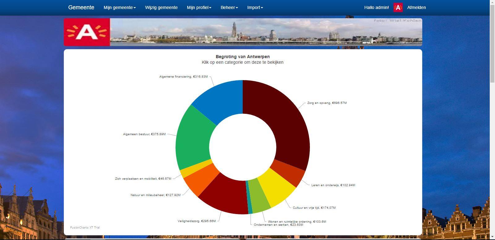

Tijdens het 2de jaar van mijn opleiding aan de KdG heb ik een groot integratieproject moeten uitwerken. Dit project maakten we in naam van 'De wakkere burger' en 'Tree Company', instanties, die burgers probeert aan te zetten tot meer participatie in maatschappelijke projecten. De vraag van deze instanties was om een web-applicatie te bouwen waarop burgers de begroting van hun gemeente konden raadplegen en zelf een voorstel tot begroting konden formuleren. In dit groepswerk moesten we eerst uitwerken hoe we dit project zouden opzetten, het analysedossier geeft dit weer aan de hand van usecases en UML. Nadien gingen we met dit dossier terug naar de opdrachtgevers om ons project te toesten aan hun vraag. In dit project was ik de teamleader: bij de start van het project was ik voornamelijk verantwoordelijk voor de communicatie met de opdrachtgever en de taakverdelingen in het team. Bij de uitwerking van de web - & Androidapplicatie was het mijn verantwoordelijkheid om de achterliggende infrastructuur op te bouwen & te onderhouden en het team te motiveren. Ondanks alle problemen, die een groepswerk met zich kan meebrengen, ben ik terecht fier dat ik met deze groep dit resultaat heb kunnen bereiken. Mijn hoofdopdracht was echter wel de automatisatie van de deployment van deze applicatie uitwerken.
Het project kan hier teruggevonden worden: Project Marchmellow

FujinIT is de naam van het fictieve bedrijf dat mijn team en ik gekozen heb voor het vak Project 4.0 binnen de opleiding aan Thomas More.
FujinIT moest een project ontwikkelen dat het mogelijk maakte om navigatie te voorzien binnen winkels. Ik heb in dit project de Servers, virtuele machines en het netwerk opgezet.
U kan hier de documentatie van het project terugvinden: Project 4.0 FujinIT
Alle documentatie van mijn portfolio is terug te vinden op mijn Github pagina: https://github.com/LukasHanot/Portfolio